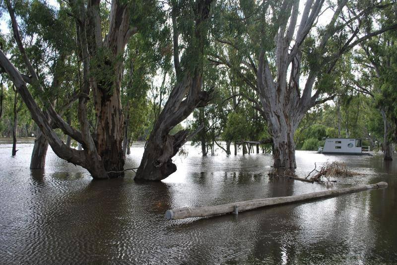

After the storm: what Strawberry Fields 2026 says about the Australian boutique festival
A sold-out weekend on the Murray brought a new quadraphonic stage, a fearlessly eclectic bill and a Friday night storm that put four people in hospital. The festival kept going. Here is what the weekend tells us.

Every festival has a plan for the weather. Most never need it. On Friday night at Strawberry Fields, a severe storm rolled across northern Victoria and the Murray River, bringing heavy rain, thunder and lightning to the site at Tocumwal.[1] Four festivalgoers were struck by lightning. All four were taken to hospital, two men to Shepparton and a man and a woman to Deniliquin, and all were later treated and discharged, according to NSW Health and Victoria’s health department.[1]
Organisers paused the music several times between Friday afternoon and the early hours of Saturday as crowds took shelter, and enacted their severe weather plan.[1] Footage on social media showed parts of the site under water.[1] In a statement, the festival said the injuries were not life-threatening and that the families of those affected had been contacted, and took time to “thank our medical teams, emergency services, and staff for their fast response”.[1]
By Saturday the worst had passed, the sun came out, and normal programming resumed.[1] That sequence, a frightening night followed by an orderly recovery, is the story of this year’s Strawberry Fields. It is also a reminder of the risks that outdoor events in regional Australia now plan around, and of how much audiences rely on a festival being ready for them.
A festival that sells itself
Strawberry Fields ran from Friday 20 to Sunday 22 November, with an early-entry opening night on the Thursday, on the banks of the Dhungala, the Murray River, on Yorta Yorta Country.[2][3][4] It was sold out long before the gates opened. Mixmag Australia reported that 95 per cent of tickets had gone before a single act was announced, and Early Bird tickets disappeared a full year in advance.[3][4]
Demand on that scale forced a change in how the last tickets were sold. This year the festival ran a ballot, with registrations closing on 30 June and the draw on 2 July, which organisers presented as a fairer way to share out a limited supply.[4] It is a sign of the festival’s standing that the question is no longer how to sell tickets, but how to ration them.
It was not always so. When the festival began in 2009 it drew about 1,000 people, its director Tara Benney told the Cobram Courier in 2023, and by then it was bringing more than $3 million a year into the local economy.[6] The 2022 edition was cancelled because of floods, after earlier delays during the pandemic.[6] This year’s storm, in other words, was not the festival’s first argument with the river.

The new room
The headline addition for 2026 was an eighth stage, The Bazaar, built with the local crews In The Moment Radio and Tribe Soundsystem around a 360-degree quadraphonic sound system.[3] Quadraphonic rigs place speakers around the audience rather than in front of it, so sound moves through the space rather than at it. In a festival that prides itself on the intimacy of its rooms, it is a logical step: an invitation to listen as much as to dance.
The rest of the map will be familiar to regulars: Wildlands, The Grove, Deep Jungle, The Beach and the Mirage Motel among them.[2] Deep Jungle was programmed to open on Friday with a celebration of ten years of Finding Figaro, and to host a Mixmag ANZ takeover on Saturday.[2]
A bill built on curiosity
More than 80 acts were billed across eight stages.[3][5] The international names leaned towards selectors with deep crates rather than festival-circuit hit-makers: Nina Kraviz, Honey Dijon, Gilles Peterson, Greentea Peng, Yīn Yīn and CC:Disco!, alongside Gerd Janson back to back with Marcel Dettmann, Galcher Lustwerk, Gabrielle Kwarteng, Peter Van Hoesen and Pariah.[2][3] Gilles Peterson’s booking carried extra weight: he was billed to return after a cancellation in 2025.[3]
The local programme was just as deliberate. Soju Gang, Miss Kaninna, Mikalah Watego, Lauren Hansom, Cherry Chola, Adriana, Jennifer Loveless and Yasmina Sadiki were all on the bill, along with an Ecstatic Mob takeover and Kia back to back with Moopie.[3] On the Wildlands stage, the bill included fumi, the Berlin-based DJ whose fast, multi-deck style has made her one of the year’s breakout names (read our profile).[5]
Paying the rent
Strawberry Fields has worked to make its relationship with the land it uses more than an acknowledgement. A portion of every 2026 ticket went to Yorta Yorta-led projects, and a Pay the Rent donation option supported the same work.[4][5] The festival also added accessibility upgrades, including a low-sensory space, and built on its waste reduction and carbon offset programs.[4][5] In 2025 it gave $100,000 to charity through Humanitix and set out to match that this year.[5]
What the weekend tells us
The lesson of Strawberry Fields 2026 is not that something went wrong. Storms happen, and the measure of a festival is how it responds. By the accounts available, this one paused when it needed to, moved people to shelter, got the injured to hospital quickly, communicated with families, and resumed only when conditions allowed.[1]
The broader lesson is about what kind of festival can thrive in Australia now. Strawberry Fields does not sell itself on headliners; it sells out before it names any. It invests in sound, in local crews, in the community whose land it occupies. Its audience trusts it enough to buy a ticket a year ahead, on faith. After a weekend that tested that trust in the hardest possible way, the festival appears to have kept it.
[ Sources and notes ]
- [ 1 ]Four people struck by lightning during Strawberry Fields music festival at Tocumwal, ABC News, 21 November 2026.
- [ 2 ]Strawberry Fields has officially kicked off, Happy Mag, 20 November 2026.
- [ 3 ]Strawberry Fields adds 8th stage & drops its 2026 lineup, Mixmag Australia, 7 July 2026.
- [ 4 ]Strawberry Fields teases new stage and big surprises for 2026 event: ballot open now, Beat, 9 June 2026.
- [ 5 ]Strawberry Fields Festival 2026, PBS FM, 9 June 2026.
- [ 6 ]Death of man mars biggest-ever Strawberry Fields festival, Cobram Courier, 20 November 2023.
Researched and drafted with AI tools; fact-checked and edited by Creators Lab editors. How we use AI · Report an error